Investigations of the galaxies of the LCV
The paper investigates the properties of galaxies in the Local Cosmological Volume (LCV), using the Catalogue of Neighboring Galaxies(Karachentsev, Makarov, and Kaisina 2013) and its updated version from the “Catalog & Atlas of the LV galaxies” database(“Catalog of the LV Galaxies” n.d.). The properties studied include the galaxy types, their various masses, the star formation rates (SFRs) and the star formation timescale  , gas depletion timescale
, gas depletion timescale  . The paper aims to understand the distribution and correlation of these properties in the sample of galaxies in the LCV, and how they relate to current astrophysical theories. Additionally, the paper discusses the conditions for star formation and the implications of the observed properties on galaxy evolution.
. The paper aims to understand the distribution and correlation of these properties in the sample of galaxies in the LCV, and how they relate to current astrophysical theories. Additionally, the paper discusses the conditions for star formation and the implications of the observed properties on galaxy evolution.
1. The Galaxies in the Local Cosmological Volume (LCV)
The Catalogue of Neigbouring Galaxies (Karachentsev, Igor D. and Makarov et al. 2013(Karachentsev, Makarov, and Kaisina 2013)) and its updated version from the “Catalog & Atlas of the LV galaxies” database(“Catalog of the LV Galaxies” n.d.) are used to extract the B-band, FUV \& K-band luminosities1 , the types of the galaxie2s, the mass within the Holmberg radius (M26), the Hydrogen masses of the galaxies ( ) and the SFRs based on integrated H and far-ultraviolet (FUV) measurments for galaxies within a distance of
) and the SFRs based on integrated H and far-ultraviolet (FUV) measurments for galaxies within a distance of
 Mpc. Some of those values contain limit flags, which we exclude from our present analysis. This gives a sample of 793 galaxies from 1248. From the remaing galaxies we have
Mpc. Some of those values contain limit flags, which we exclude from our present analysis. This gives a sample of 793 galaxies from 1248. From the remaing galaxies we have
 1
1
| Measurment | Number of Galaxies |
The K-band values are converted to the total Stellar Masses of each galaxy according to the mass-to-light ratio of 0.6 (), and the can be converted to the total mass of the gas of the galaxy using the equation 
The total SFR of each galaxy can be calcuated by

if both  measurments are available. If only one only one of them is given, then the SFR is equal to the given SFR value
measurments are available. If only one only one of them is given, then the SFR is equal to the given SFR value

The condition  leaves 579
galaxies. This condition is applied due to the reasons given in the P. Kroupa,M. Haslbauer, I. Banik, S. T. Nagesh and J. Pflamm-Altenburg et al. 2020
leaves 579
galaxies. This condition is applied due to the reasons given in the P. Kroupa,M. Haslbauer, I. Banik, S. T. Nagesh and J. Pflamm-Altenburg et al. 2020
2. Types of galaxies
Using the dataset of 1248 galaxies, do before using the condition and removing the galaxies with the flags, the below histograms can be plotted.
Most of the galaxies in the LCV are Higly Irregular galaxies followed by lenticular galaxies
Out of the 1248 galaxies the 1022 are dwarf galaxies
Most dwarf galaxies have low brightness and are irregulars followed by Dwarf spheroidal.
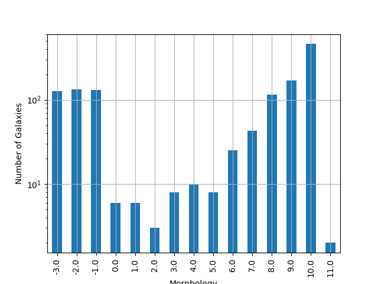
Figure 1: The classification by de Vaucouleurs et al. (1991) is used for the morphology of the galaxies
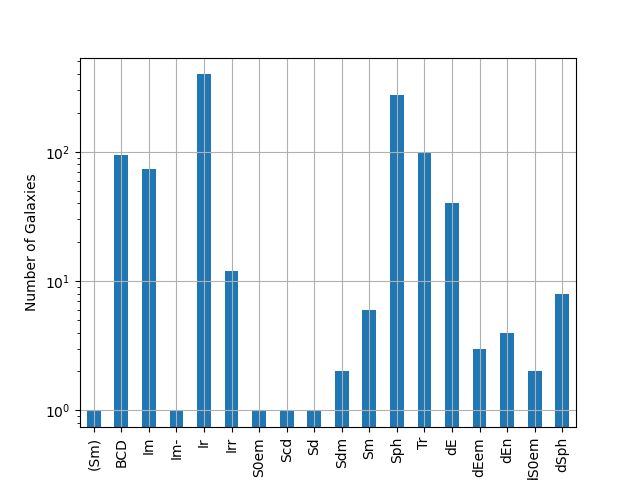
Figure 2: Dwarf galaxy morphology
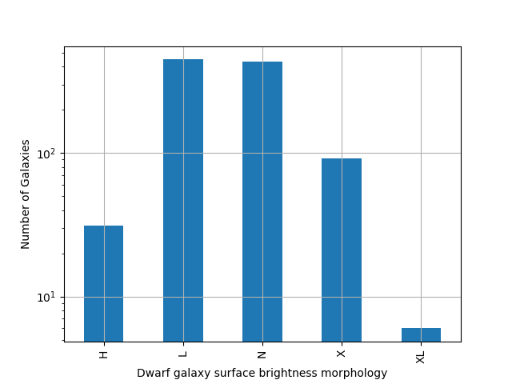
Figure 3: Dwarf galaxy surface brightness morphology, where: H = high; N = normal; L = low; X = extremely low.
3. Delayed- model
According to P. Kroupa et al. 2020(Kroupa et al. 2020) current star formation rates of galaxies can be described by the ’delayed-’ mode as
 1
1
where is the star formation time-scale,  is the real time of star formation in a given galaxy and
is the real time of star formation in a given galaxy and  a normalization constant.
a normalization constant.
The average SFR is
 2
2
and can also be defined by the present day stellar mass

where  accommodates for mass-loss through stella evolution and
accommodates for mass-loss through stella evolution and 
This is a system of 2 equations and 3 variables, since Adel has never been calculated
3.1. Constant
The observed ages of galactic discs are  Gyr(Knox, Hawkins, and Hambly 1999), so assuming an approximation of
Gyr(Knox, Hawkins, and Hambly 1999), so assuming an approximation of  Gyr, the
Gyr, the  can be calcuated, from the equation ().
can be calcuated, from the equation ().
After that the equation of ratio
 3
3
can be solved numerically for  and using the equations () and () the and of each galaxy are found.
and using the equations () and () the and of each galaxy are found.
 4
4
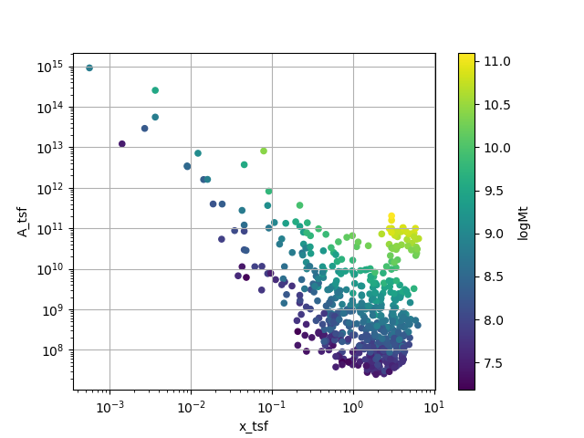
Figure 4:  for constant tsf
for constant tsf
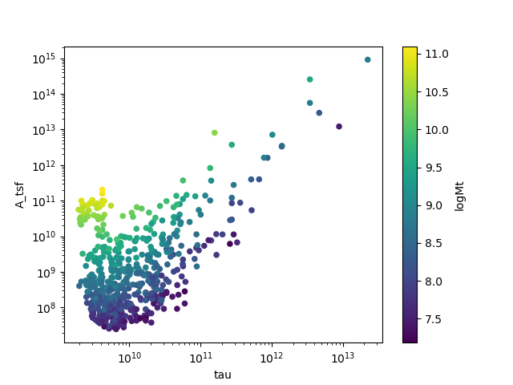
3.2. Constant
Assuming for an constant  Gyr, we cannot use the same
Gyr, we cannot use the same  since it depends on . Using the equations~() and ()
since it depends on . Using the equations~() and ()

using this equation and can be calcuated numerically.
 4
4
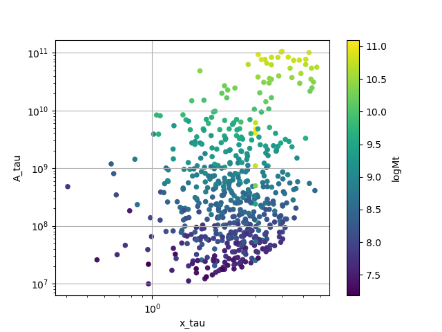
Figure 5: for constant
3.3. Comparing the two results
3.3.1. Comparing the ’s
Comparing the two different results for x, we see that the  has a lower
has a lower 
 4
4
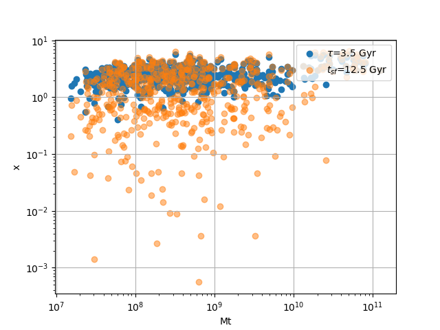
Figure 6: Comparing the two x’s, According to their total masses
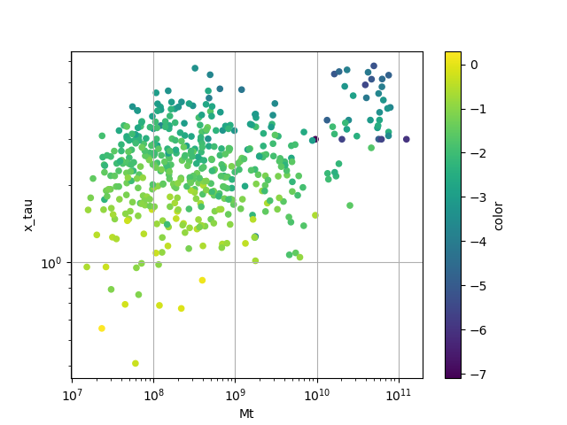
Figure 7:  , with their color index
, with their color index
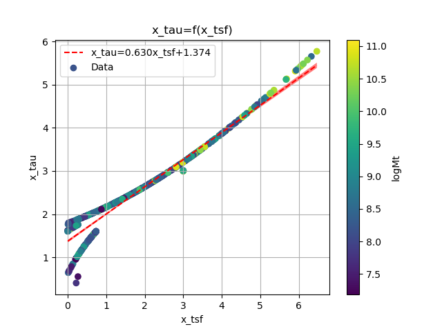
Figure 8: Comparing the two x, according to their total mass
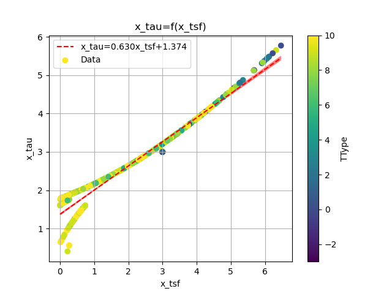
Figure 9: Comparing the two x, according to their type
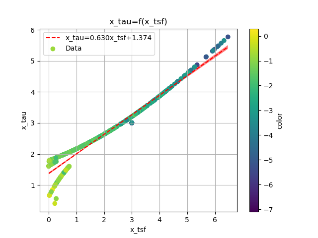
Figure 10: Comparing the two x, according to their color index
The two results are interrelated through the equation:
 4
4
and from the plots the following conclusions can be drawn:
- The galaxies with a higher total mass deviate less from the linear fit and are older.
- The younger galaxies are mainly later types of galaxies
- For lower x’s, the galaxies have a lower color index which indicates that they are younger. So the values are inline with the experimental values.
3.3.2. Comparing the normalization constants
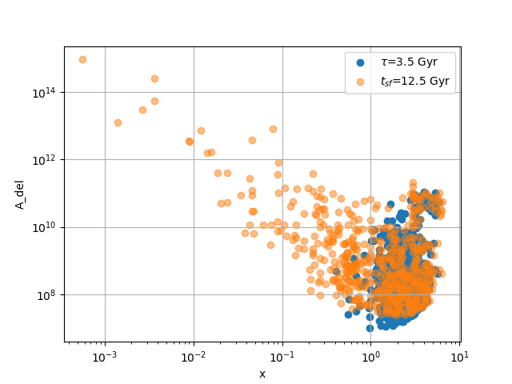
Figure 11: Comparing the two Adel
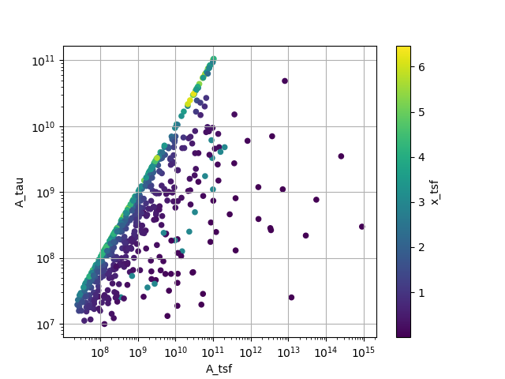
Figure 12: Comparison of the 2 Adels according to their
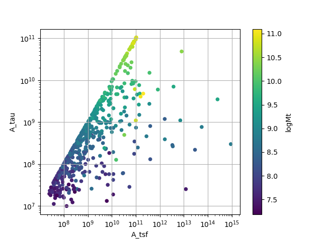
Figure 13: Comparison of the 2 Adels according to their total masses
For high and high masses the two Adels have a high correlation. Specifically:
- For high the
 plot follows a
plot follows a  trend, which means that for older stars and stars with a low star formation timescale , the normalization constant is the same despite the method used to calculate it.
trend, which means that for older stars and stars with a low star formation timescale , the normalization constant is the same despite the method used to calculate it. - The same is true for more massive galaxies, since they deviate less from the line
4. The gas depletion timescale
The gas depletion timescale measures the time taken by a galaxy to exhaust its gas content Mg given the current SFR(Nagesh et al. 2023; Pflamm-Altenburg and Kroupa 2009).
 5
5
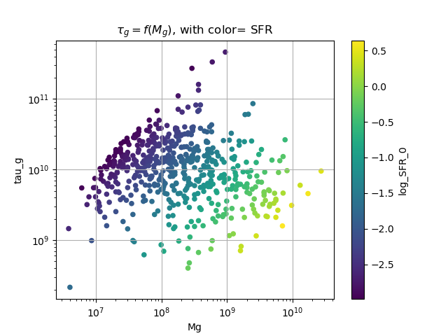
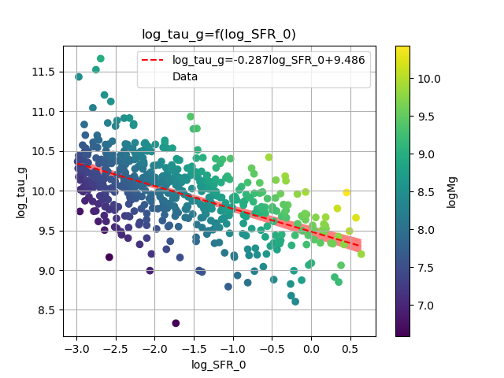
Figure 14: Correlation of the with the SFR and the gas mass
Despite a weak logarithmic correlation (as indicated by  ), there is a noticeable trend of decreasing with increasing SFR and
), there is a noticeable trend of decreasing with increasing SFR and  .
.
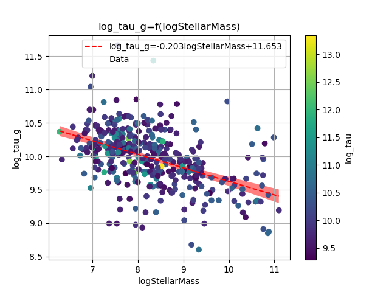
Figure 15: Correlation of the with the SFR and the Stellar mass
The logarithmic correlation between  is low (
is low ( ), there seems to be a pattern wherein the decrease of corresponds to an increase in the values of the Stellar Mass, but there does not seem to be one for
), there seems to be a pattern wherein the decrease of corresponds to an increase in the values of the Stellar Mass, but there does not seem to be one for 
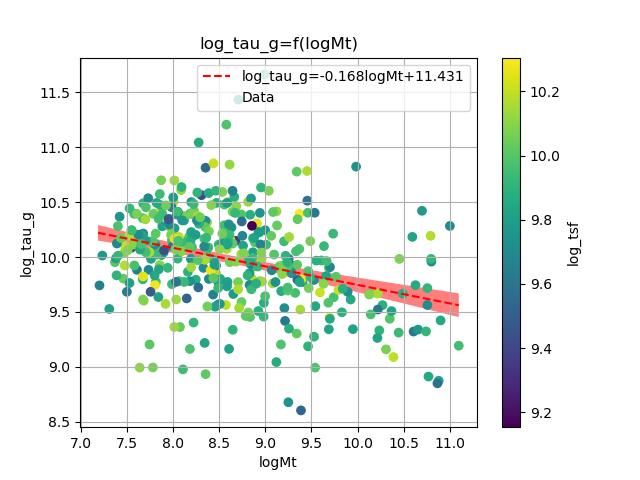
Figure 16: Correlation of the with the total mass and the mass of the gas
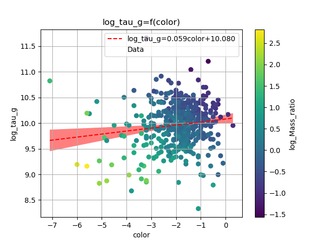
Figure 17: Correlation of the with the color index
Again it can be observed that as the decreases, the corresponding values of  increase, but the logarithmic correlation is again low (
increase, but the logarithmic correlation is again low ( ), and there is no clear correlation between
), and there is no clear correlation between 
There is a notable trend, wherein for high masses we have a shorter timescale.
5. Mass relations
Many of the galaxies masses have a high correlation with each other, and also help us understand the previous calculations.
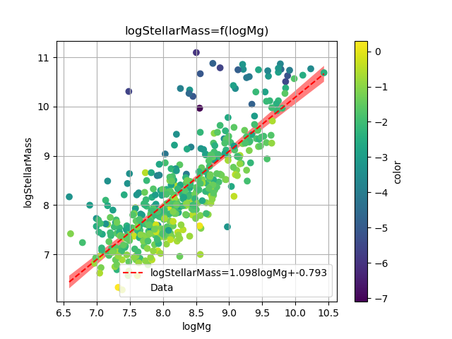
Figure 18: mgSMass
For the plot 18:
 6
6
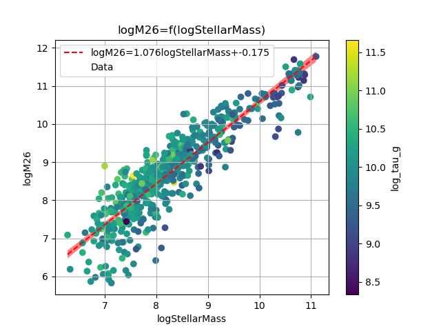
Figure 19: SMassm26
For the plot 19:
 7
7
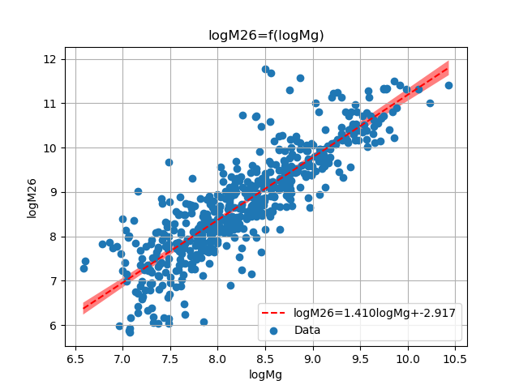
Figure 20: mgm26
For the plot 20:
 8
8
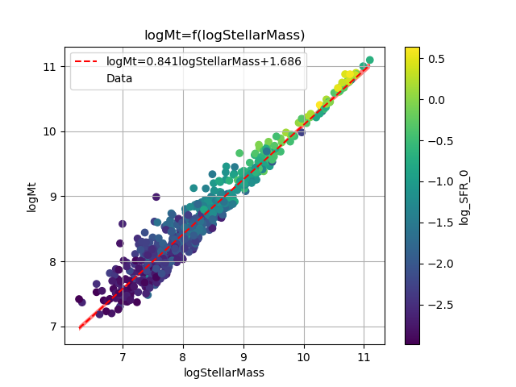
Figure 21: SMassmt
For the plot 21:
 9
9
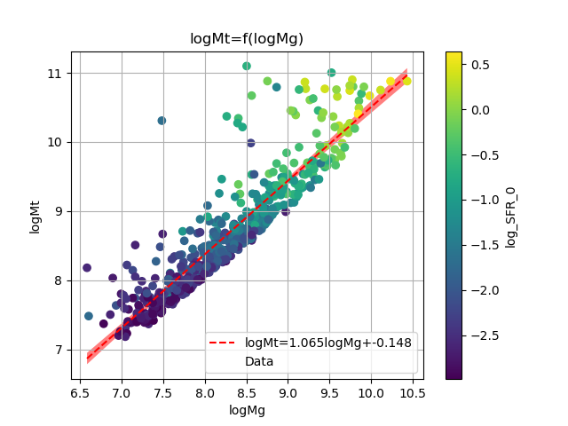
Figure 22: mgmt
For the plot 22:
 10
10
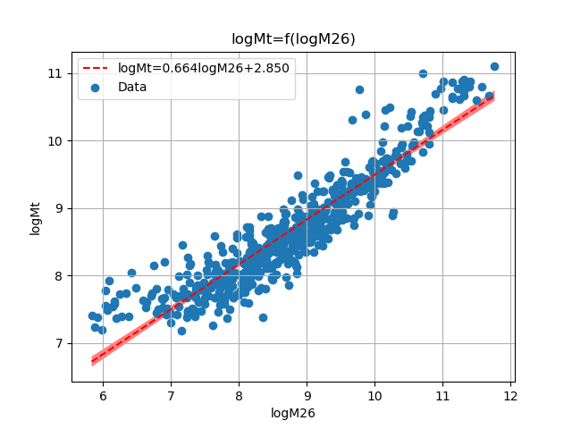
Figure 23: m26mt
 11
11
There are many plots exhibiting a correlation of  , indicating that we can utilize those functions to estimate the masses of the galaxies in the LCV with a high degree of confidence.
, indicating that we can utilize those functions to estimate the masses of the galaxies in the LCV with a high degree of confidence.
The  () plot is particularly noteworthy, displaying a correlation of
() plot is particularly noteworthy, displaying a correlation of  . This plot also indicates that galaxies with greater total and stellar masses tend to have higher SFR, consistent with the findings in section where decreases with increasing masses.
. This plot also indicates that galaxies with greater total and stellar masses tend to have higher SFR, consistent with the findings in section where decreases with increasing masses.
This phenomenon is likely due to the fact that galaxies with higher masses possess greater potential energy, which accelerates the star formation process. The galaxies with a high Mass ratio  could also help the process due to their dense regions and the resulting strong local gravitational potential.
could also help the process due to their dense regions and the resulting strong local gravitational potential.
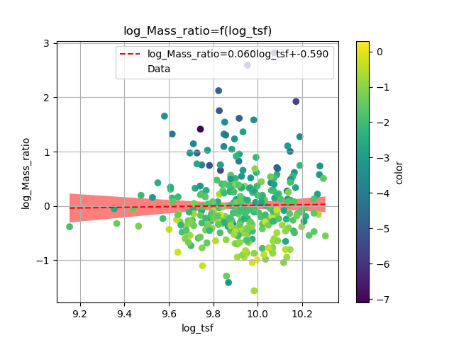
Figure 24: tsfmr
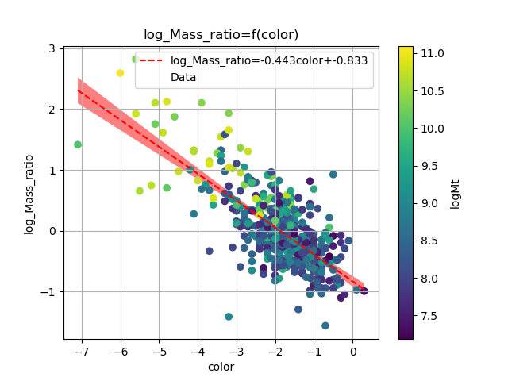
Figure 25: colMr
From the , we conclude that when the color index is higher the Mass ratio decreases, which is to be expected, since the higher the B-FUV the more active the star formation of the galaxy.
6. Variations in Star Formation Rate Across the Different Masses
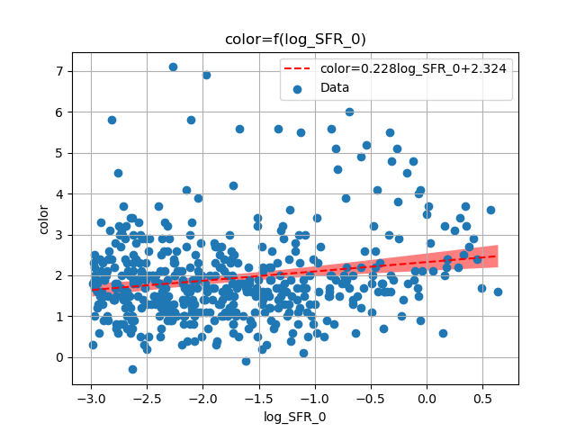
Figure 26: None
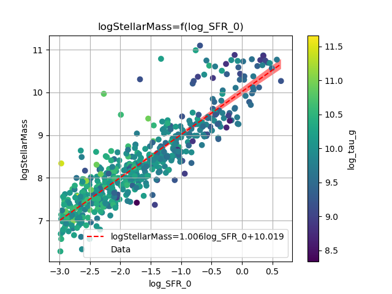
Figure 27: None
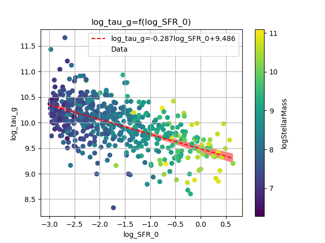
Figure 28: None
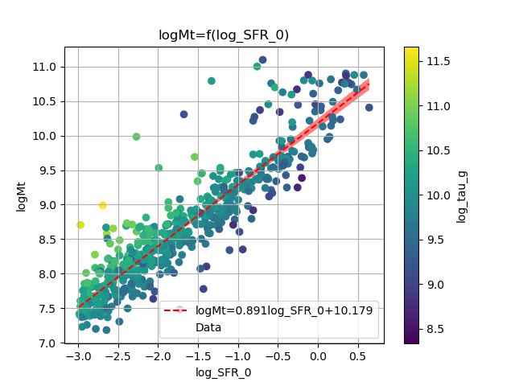
Figure 29: None